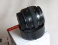

狼狼鱼2014-10-08 11:374.42 分
操作性 4.50耐用性 4.50性价比 5.00解像力 4.00色彩还原 4.50机械结构 4.00
hushaoshu2014-08-07 09:424 分
操作性 4.00耐用性 4.00性价比 4.00解像力 4.00色彩还原 4.00机械结构 4.00
guoklose2014-07-10 14:303.83 分
操作性 4.50耐用性 4.50性价比 5.00解像力 4.00色彩还原 2.50机械结构 2.50
哈斯2014-06-21 20:534.08 分
操作性 4.50耐用性 3.50性价比 4.50解像力 4.00色彩还原 4.00机械结构 4.00
ufowjt2014-06-14 13:154.67 分
操作性 5.00耐用性 4.50性价比 4.50解像力 4.50色彩还原 5.00机械结构 4.50
jerysys2014-06-03 17:523.92 分
操作性 4.00耐用性 3.00性价比 4.50解像力 4.00色彩还原 4.50机械结构 3.50
十几年2014-02-21 21:524.5 分
操作性 4.50耐用性 4.50性价比 4.50解像力 4.50色彩还原 5.00机械结构 4.00
75years2014-02-21 18:15
bleueloup2014-02-18 16:284.25 分
操作性 4.50耐用性 4.00性价比 4.00解像力 4.50色彩还原 4.50机械结构 4.00
chibang2014-01-24 19:514.67 分
操作性 5.00耐用性 5.00性价比 4.50解像力 4.50色彩还原 5.00机械结构 4.00
newshop2014-01-07 22:104.92 分
操作性 5.00耐用性 5.00性价比 5.00解像力 5.00色彩还原 5.00机械结构 4.50
scghlxj2013-11-23 20:574.83 分
操作性 5.00耐用性 4.50性价比 5.00解像力 5.00色彩还原 5.00机械结构 4.50
zpjzpj2013-08-17 23:064.17 分
操作性 4.00耐用性 4.00性价比 4.00解像力 4.50色彩还原 4.50机械结构 4.00
teddysd2013-08-13 19:320.5 分
操作性 0.50耐用性 0.50性价比 0.50解像力 0.50色彩还原 0.50机械结构 0.50
tylor572013-04-27 16:254 分
操作性 3.00耐用性 4.00性价比 4.50解像力 4.00色彩还原 4.50机械结构 4.00
trcol2013-03-07 05:554.75 分
操作性 4.50耐用性 4.50性价比 5.00解像力 5.00色彩还原 5.00机械结构 4.50

arondes2012-12-14 02:174.67 分
操作性 4.50耐用性 4.50性价比 5.00解像力 5.00色彩还原 5.00机械结构 4.00
nearsea2012-10-15 06:563.75 分
操作性 3.50耐用性 3.50性价比 2.50解像力 4.50色彩还原 4.50机械结构 4.00
lifei520haome2012-05-28 17:08
teda1232012-05-28 16:324.58 分
操作性 4.50耐用性 4.00性价比 5.00解像力 5.00色彩还原 5.00机械结构 4.00
gfedcbaa2012-04-09 13:584.75 分
操作性 4.50耐用性 4.50性价比 5.00解像力 5.00色彩还原 5.00机械结构 4.50
MICHAELG2012-04-02 07:22
红胡子2012-03-28 22:163.83 分
操作性 4.00耐用性 3.50性价比 4.50解像力 4.00色彩还原 4.00机械结构 3.00
fengq1002012-03-09 20:494.17 分
操作性 4.50耐用性 3.00性价比 4.00解像力 5.00色彩还原 4.50机械结构 4.00
罗亚2012-02-22 12:464.5 分
操作性 4.50耐用性 4.00性价比 5.00解像力 4.50色彩还原 5.00机械结构 4.00
passony2012-01-27 21:404.58 分
操作性 5.00耐用性 4.00性价比 4.50解像力 5.00色彩还原 5.00机械结构 4.00
UVfilter2012-01-05 15:514.08 分
操作性 3.00耐用性 4.00性价比 4.50解像力 5.00色彩还原 4.50机械结构 3.50
iron01292011-12-31 17:003.42 分
操作性 3.00耐用性 3.00性价比 3.50解像力 4.50色彩还原 4.50机械结构 2.00
kinhai2011-12-15 20:174.5 分
操作性 4.50耐用性 4.00性价比 5.00解像力 4.50色彩还原 5.00机械结构 4.00
墨春秋2011-12-10 16:17
康花花2011-12-07 21:203.92 分
操作性 4.00耐用性 3.50性价比 4.00解像力 4.50色彩还原 4.00机械结构 3.50
ufowjt2011-12-07 20:30
sawyer19852011-10-07 11:394.33 分
操作性 4.50耐用性 3.50性价比 4.50解像力 5.00色彩还原 5.00机械结构 3.50
daizhiqiang2011-10-01 18:474.25 分
操作性 4.00耐用性 3.50性价比 4.50解像力 5.00色彩还原 5.00机械结构 3.50
jeffht2011-09-30 20:213.67 分
操作性 4.00耐用性 3.50性价比 4.00解像力 4.00色彩还原 3.50机械结构 3.00
四月下午2011-09-10 17:484.5 分
操作性 4.50耐用性 4.00性价比 4.50解像力 5.00色彩还原 5.00机械结构 4.00
trcol2011-09-09 10:17
samewhere2011-08-29 11:494 分
操作性 4.00耐用性 3.00性价比 4.00解像力 4.50色彩还原 4.50机械结构 4.00
flyshe742011-07-21 11:043.75 分
操作性 3.50耐用性 3.50性价比 4.00解像力 4.50色彩还原 4.50机械结构 2.50
cat佬2011-07-13 17:414 分
操作性 4.00耐用性 3.50性价比 4.00解像力 4.50色彩还原 4.50机械结构 3.50
zw19827112011-07-11 17:244.08 分
操作性 3.50耐用性 3.50性价比 4.50解像力 4.50色彩还原 5.00机械结构 3.50
owen182011-07-03 23:383.25 分
操作性 3.00耐用性 3.00性价比 3.00解像力 4.50色彩还原 4.00机械结构 2.00
filters2011-06-20 08:584.5 分
操作性 4.50耐用性 4.50性价比 4.50解像力 5.00色彩还原 4.50机械结构 4.00
aiar2011-06-16 14:534.17 分
操作性 4.00耐用性 4.00性价比 4.50解像力 4.50色彩还原 4.50机械结构 3.50
发烧烧钱2011-04-14 22:454.42 分
操作性 4.50耐用性 4.50性价比 4.00解像力 4.50色彩还原 4.50机械结构 4.50
喜欢下雨2011-01-31 21:314.58 分
操作性 4.50耐用性 4.00性价比 4.50解像力 5.00色彩还原 5.00机械结构 4.50
shouter2011-01-05 23:054.42 分
操作性 4.00耐用性 4.50性价比 4.50解像力 4.50色彩还原 5.00机械结构 4.00
从耗子胖成猪2010-12-05 23:513.67 分
操作性 3.00耐用性 3.50性价比 4.00解像力 4.50色彩还原 4.00机械结构 3.00
cs10202010-11-22 16:573.42 分
操作性 4.00耐用性 2.00性价比 4.50解像力 4.50色彩还原 5.00机械结构 0.50
cybertron2010-11-19 03:104.42 分
操作性 4.00耐用性 4.00性价比 4.50解像力 5.00色彩还原 5.00机械结构 4.00
koshuen2010-11-18 19:283.67 分
操作性 3.50耐用性 3.50性价比 4.00解像力 4.00色彩还原 4.00机械结构 3.00
zhangzkzk7468凯2010-11-11 13:162.75 分
操作性 3.50耐用性 3.50性价比 2.50解像力 2.00色彩还原 2.50机械结构 2.50
后来什么2010-11-10 23:414 分
操作性 4.50耐用性 3.50性价比 3.50解像力 4.50色彩还原 4.50机械结构 3.50
布拉格医生2010-10-13 00:314.67 分
操作性 4.50耐用性 4.50性价比 4.50解像力 4.50色彩还原 5.00机械结构 5.00
良平2010-10-02 22:054.67 分
操作性 4.50耐用性 4.50性价比 5.00解像力 4.50色彩还原 5.00机械结构 4.50
大肉2010-09-25 14:243.17 分
操作性 4.00耐用性 4.00性价比 3.00解像力 3.00色彩还原 3.00机械结构 2.00
曹村陈少2010-09-21 16:303.75 分
操作性 4.00耐用性 3.50性价比 3.50解像力 4.00色彩还原 4.00机械结构 3.50
shatgu2010-08-08 15:043.25 分
操作性 3.50耐用性 2.00性价比 4.50解像力 4.00色彩还原 3.50机械结构 2.00
TommyChampion2010-07-25 17:073.67 分
操作性 3.00耐用性 3.00性价比 4.00解像力 5.00色彩还原 5.00机械结构 2.00
dajunboy2010-07-17 00:244.42 分
操作性 4.50耐用性 3.50性价比 4.50解像力 5.00色彩还原 5.00机械结构 4.00
amahane2010-07-08 13:134.25 分
操作性 4.00耐用性 4.00性价比 4.50解像力 5.00色彩还原 4.50机械结构 3.50
持兔码2010-06-17 19:29
kqsj2010-06-15 14:11
温柔海风2010-06-09 22:334.25 分
操作性 4.00耐用性 4.00性价比 4.50解像力 4.50色彩还原 4.50机械结构 4.00
3Dimension2010-05-08 03:414.25 分
操作性 4.50耐用性 3.50性价比 5.00解像力 4.50色彩还原 4.50机械结构 3.50
shark737ng2010-04-22 13:394.42 分
操作性 4.00耐用性 4.00性价比 4.50解像力 5.00色彩还原 5.00机械结构 4.00
saiyinbater2010-04-22 08:143.5 分
操作性 4.00耐用性 1.50性价比 3.50解像力 4.50色彩还原 4.50机械结构 3.00
kqsj2010-04-10 08:524.42 分
操作性 4.50耐用性 4.00性价比 5.00解像力 5.00色彩还原 4.50机械结构 3.50
cwhq2010-03-28 17:204.75 分
操作性 5.00耐用性 4.50性价比 4.50解像力 5.00色彩还原 5.00机械结构 4.50
mabole01302010-03-18 23:504 分
操作性 4.50耐用性 4.00性价比 4.00解像力 4.00色彩还原 4.50机械结构 3.00
李白兔子2010-03-09 22:39
yez982010-03-09 21:164.25 分
操作性 4.50耐用性 3.50性价比 4.50解像力 4.50色彩还原 5.00机械结构 3.50
vanBeethoven2010-03-08 15:084.42 分
操作性 4.00耐用性 4.00性价比 5.00解像力 5.00色彩还原 4.50机械结构 4.00
jiecd2010-03-08 08:134.42 分
操作性 4.50耐用性 4.00性价比 5.00解像力 4.00色彩还原 5.00机械结构 4.00
yhcsc2010-03-08 05:544 分
操作性 4.00耐用性 3.00性价比 4.00解像力 4.50色彩还原 5.00机械结构 3.50
小六儿2010-03-07 22:104.17 分
操作性 4.50耐用性 4.00性价比 3.50解像力 5.00色彩还原 4.50机械结构 3.50
zdz2002-05-15 15:004.83 分
操作性 5.00耐用性 5.00性价比 4.50解像力 5.00色彩还原 5.00机械结构 4.50
Bergda2002-04-25 04:574.08 分
操作性 4.50耐用性 3.50性价比 4.00解像力 5.00色彩还原 5.00机械结构 2.50
AirforceOne2002-04-17 14:074.17 分
操作性 4.00耐用性 3.50性价比 4.00解像力 5.00色彩还原 5.00机械结构 3.50